Brazil, the largest country in South America, is similar in physical area to the continental United States (i.e., the United States without Alaska or Hawaii). Catholicism is the dominant religion and Portuguese is the primary language. Once a Portuguese colony, the country’s culture was built on European immigration and African slave labor, making for a rich mixture of ethnic backgrounds.
In colonial times, Brazil was a part of the Atlantic Trade TriangleThe shipping trade that moved goods and people between Europe, Africa, and the New World., which functioned as a transportation conveyor, moving goods and people around the regions bordering the Atlantic Ocean. Colonial merchant ships financed by Europe’s wealthy elite brought goods and trinkets to the African coast to trade for slaves, who were shipped to the Americas and the Caribbean to diminish the labor shortage for the colonies. The last leg of the Atlantic Trade Triangle moved food crops, sugar, tobacco, and rum from the colonies back to the European ports. The merchant ships never sailed with an empty hold, and their successful voyages provided enormous profits to the European financiers.
Figure 6.24 Atlantic Trade Triangle
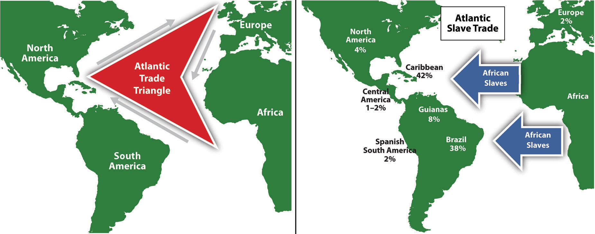Manufactured trinkets were sent to Africa from Europe, slaves were sent to the Americas, and plantation products and rum were sent to Europe. The Atlantic slave trade was responsible for bringing more than ten million African slaves to the Americas. Brazil received the largest number of slaves.
The total number of individuals taken as slaves from Africa is unclear and often debated. It is estimated that more than ten million African slaves survived the Middle PassageThe journey of ships carrying African slaves across the Atlantic Ocean. from Africa to the Western Hemisphere, which is more than the current population of Bolivia. Slavery supplied cheap labor for the plantations and agricultural operations in the New World. Brazil took in more African slaves than any other single country—at least three million. Colonial Brazil thrived on early plantation agriculture. When slavery was abolished in Brazil in 1888, the freed slaves found themselves on the lower end of the socioeconomic hierarchy. People of mixed African descent now make up more than one-third of Brazil’s population. The Afro-Brazilian heritage remains strong and dominates the country’s east coast. The African influence is evident in everything from the samba schools of the Brazilian carnival to the music and traditions of the people. In spite of Brazil being a culturally diverse country, Africans still have not found themselves on an even playing field in terms of economic or political opportunities in positions of power in the country.
Figure 6.25 Population of the Various Regions of Brazil Indicating the Core Region around the Cities of the Southeast
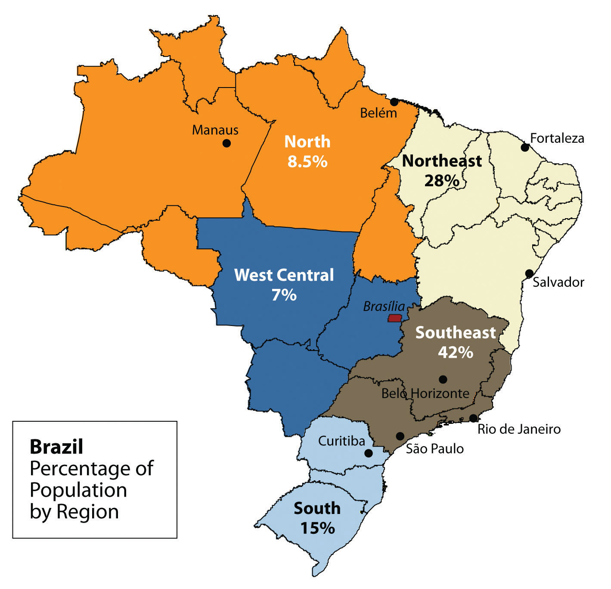The peripheral region includes the large Amazon Basin of the north. Notice the many small states in the Northeast from Fortaleza to Salvador; these states are densely populated.
Source: Updated from map courtesy of Darlan P. de Campos, http://commons.wikimedia.org/wiki/File:Brazil_States.svg.
Brazil’s human development patterns are an example of the core-periphery spatial relationship. The main economic core area is located in the southeast region of Brazil, an area that is home to the largest cities of the realm and acts as the hub for industrial and economic activities. Political and economic power is held by elites residing in the urban core areas. The rural northern Amazon Basin is the heart of the periphery, providing raw materials and resources needed in the core. The periphery has a small population density, and most are Amerindian groups that make a living from subsistence agriculture, mining, and forestry. Rural-to-urban shift has prompted many of the rural poor to migrate to the large cities.
Founded in 1554 as a Catholic mission, the city of São Paulo rests at the heart of the core region. Its pattern of development is similar to that of Mexico City. Coffee production was the early basis of the local economy. São Paulo is located about thirty miles inland from the coast. It has grown to be the center of trade and industry for Brazil, but Rio de Janeiro receives greater attention for tourism. With more than twenty million people, São Paulo is the largest industrial metropolis south of the Equator, the largest city in South America, and among the largest cities on the planet.
Rio de Janeiro, Brazil’s best-known city, is a travel and international business center with a population of more than ten million. The city is renowned for its carnival festivities and famous coastline. Tourists are attracted by its cultural attractions and coastal setting, with beautiful sandy beaches and the landmark Sugarloaf Mountain located in an open bay. Salvador, located on the coast, was Brazil’s first capital. Rio de Janeiro became the capital in 1763, but to further develop Brazil’s interior, in 1960 the capital was moved from Rio to the forward capital of Brasilia. Forward capitals are created to either shift development or to safeguard a geographical region. Brazil has an enormous interior region that it wishes to continue to develop for economic gain and the creation of the forward capital of Brasilia is in line with this objective.
Figure 6.26 Christ the Redeemer
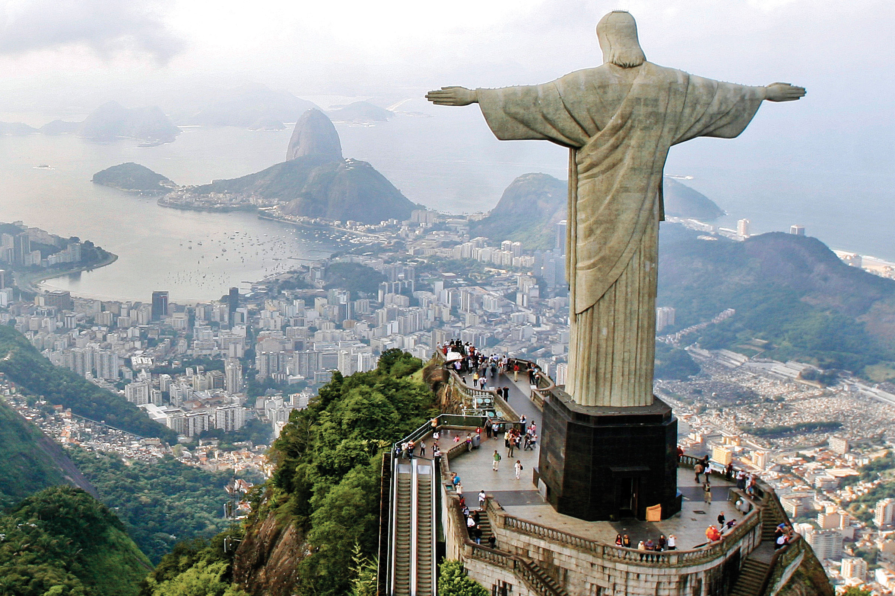This giant statue overlooks the immense urban landscape of Rio de Janeiro, with Sugarloaf Mountain in the background.
Source: Photo courtesy of Pedro Kirilos, http://www.flickr.com/photos/pedrokirilos/3640359022.
The three cities of São Paulo, Rio de Janeiro, and Brasilia, along with their urban neighbors, anchor the core region in the south. Brazil’s internal migration to these cities follows a rural-to-urban or periphery-to-core pattern, so it is no mystery why these three cities continue to grow at an unprecedented rate. São Paulo is more than sixty miles across. As migrant workers from the countryside and from the rural northeast migrate to the cities looking for work, they expand the city through self-construction. Slums, called favelas, extend out from the central city for miles.
The cultural fabric of Brazil has been built by immigrants from many countries. Brazil’s diverse population has linked the country to the homelands of its immigrants and established trade and cultural connections that benefit the country in the global marketplace. The more than two hundred million people that make up Brazil’s population are diverse and yet integrated, even if many still hold to the traditions or cultural heritage of their country of origin. After World War II, a large number of Japanese migrated to São Paulo. Today, Brazil boasts the largest Japanese population outside Japan. Many people from both Western and Eastern Europe have made Brazil their home, and large numbers of people from Lebanon, Syria, and the Middle East have immigrated here.
In spite its cultural diversity, Brazil has two overarching cultural forces that have helped hold the country together: the Portuguese language and Catholicism. These two centripetal forces help establish a sense of nationalism and identity. The Portuguese language has been adapted to the Brazilian society to reflect a slightly different dialect than the Portuguese spoken in Portugal. The Portuguese language has more of a unifying effect than religion. Though about 70 percent of the population claims to be Roman Catholic, additional religious affiliations in Brazil range from the African influence of Umbanda to the Muslim minority. Protestant denominations are the second-largest religious affiliations in Brazil. Secularism is on the rise, and many do not actively practice their specified religion.
In both population and physical area, Brazil ranks fifth in the world. Brazil is as urban as the United States or countries in the European Union. The index of economic development can be applied to Brazil: as a region urbanizes and industrializes, the family size usually decreases and incomes usually increase. Family size has dropped significantly, from 4.4 children in 1980 to 2.4 children in 2000, and continues to decline. Religious traditions give way to the urban culture and secular attitudes of modernity when it comes to family size.
Brazil is an urban country. Approximately 87 percent of Brazil’s population lives in urban areas. Urbanization seldom eliminates poverty. Though the index of economic development indicates that urbanization will increase incomes for the population as a whole, poverty is a standard component of any large urban area in most places of the world, and the favelas of Brazil are similar to slums elsewhere.
Figure 6.27 Favela La Rocinha, Rio de Janeiro, Brazil
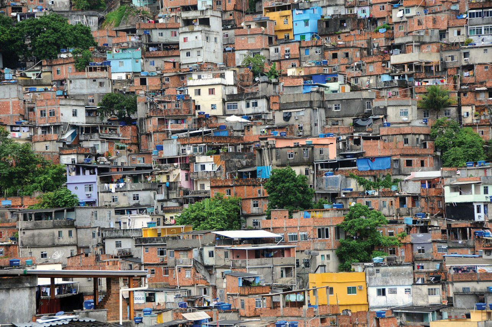Favelas are usually self-constructed and start out as slums. Many lack ownership rights, police protection, or public services. With time, some become established neighborhoods.
Source: Photo courtesy of anjči, http://www.flickr.com/photos/9899582@N05/5562842406.
The favelas of Brazil’s urban centers are dynamic places, where land ownership, law and order, and public services are questionable. Millions of people live in the favelas of Brazil’s large cities. Poverty and the search for opportunities and advantages are common elements of urban life. The core cities of Brazil suffer from the same problems as other developing megacities: overcrowding, pollution, congestion, traffic jams, crime, and increased social tensions. The energy generated by the sheer magnitude of people, industry, and commerce continues to fuel Brazil’s vibrant growth and its many large, dynamic cities.
The pattern of wealth developing in Brazil is quite common: wealth and the ability to obtain wealth are held in the hands of those at the higher end of the socioeconomic ladder. The pyramid-shaped graphic used to illustrate Mexico’s social layers in Chapter 5 "Middle America", Section 5.2 "Mexico" can also be applied to Brazil (see Figure 6.28 "Socioeconomic Classes in Brazil, Also Common throughout Middle and South America"). The minority wealthy elite own most of the land and businesses and control more than half the wealth. Corporate colonialism is quite active in Brazil. Multinational corporations take advantage of the country’s development activities and muscle in on the profits, which seldom reach the hands of the majority at the lower end of society.
Figure 6.28 Socioeconomic Classes in Brazil, Also Common throughout Middle and South America
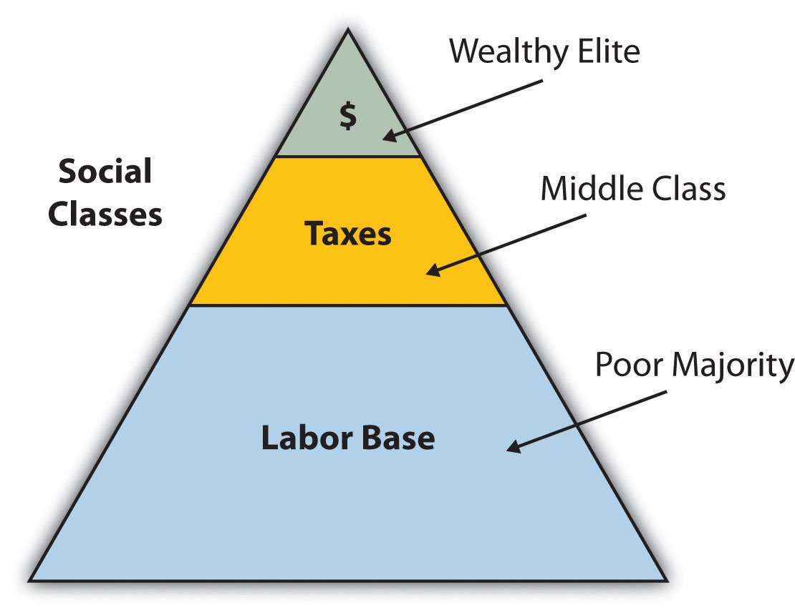Brazil is an emerging power in the world marketplace. Brazil has the largest economy in South America and is a parallel force with the United States in the Northern Hemisphere. The country has urbanized and industrialized to compete with the global economic core areas in many ways. Brazil is among the ten largest economies in the world.
Brazil has favorable resources and labor to complete in the global marketplace. Its agricultural output has grown immensely over the past few decades. Brazil is a major exporter of soybeans, coffee, orange juice, beef, and other agricultural products. Brazil is the largest coffee producer in South America, but coffee only constitutes about 5 percent of its current annual exports. Coffee production is extensive in the Brazilian Highlands just inland from the coast. In addition, Brazil exports more orange juice than any other country and is second in the world in soybean production. The vast central interior regions such as the cerrado continue to be developed for industrial farming of massive food crops. However, exports of industrial manufactured products have surpassed agricultural exports in 2010. The availability of abundant minerals and iron ore has supported an expanding steel industry and automotive manufacturing, and its industrial activity continues to develop. Competitive high-tech companies continue to emerge, and production has increased in semiconductors, computers, petrochemicals, aircraft, and a host of other consumer-based products that provide economic growth.
Brazil economically dominates and anchors South America. The economic integration being developed throughout the South American continent has great potential because it combines the energy region of the north, the commercial centers in the south, and the agricultural sectors as complementary forces within Brazil’s industrial base. Brazil is at both the physical center and the economic center of the continent.
Brazil is not only emerging on the world’s stage on the economic front, but it also has a strong social and cultural presence in the world. The large metropolitan areas of the country are a Mecca for fashion and the arts. Carnival is the most well known of Brazil’s cultural festivals, but the country is host to a number of other international events. Brazil is active in world sports competition and hosted the 2007 Pan American Games. Rio de Janeiro has been scheduled to host the 2016 Summer Olympics and the 2014 FIFA World Cup. The Fédération Internationale de Football Association (International Federation of Association Football) is commonly known by the acronym FIFA and is the international governing body of soccer (football). The 2010 FIFA World Cup was held in South Africa.
Just as the megacities of southern Brazil anchor the core of the country, it is the rural expanse of the Amazon North that makes up the periphery. A region the size of the US Midwest, the Amazon River basin is a frontier development area that has been exploited for its natural resources. Rubber barons of early years traveled up the Amazon River and established the port city of Manaus to organize rubber plantations for automobile tires. The Amazon River is large enough for oceangoing vessels to travel to Manaus. Today, Manaus has a free-trade zone with an entire industrial complex for the production of electronic goods and an ultramodern airport facility. Smaller ships can continue up the Amazon River all the way to Iquitos in Peru, which makes Manaus an ideal core city for economic trade; smuggling; and transshipment of illegal goods, including exotic animals from the region, such as monkeys, beautifully colored parrots, and other birds.
Figure 6.29 Natural Vegetation of Brazil
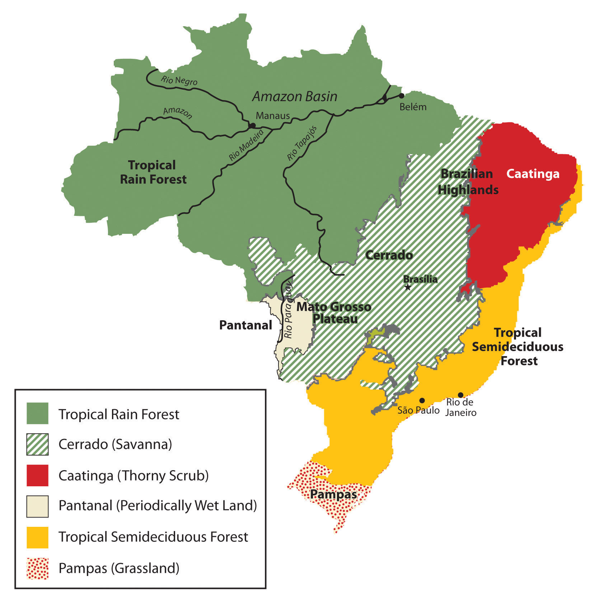The immense area of the tropical rain forest can be seen on this map. The extensive cerrado region is noted on this map between the tropical rain forests of the Amazon Basin and the deciduous forests of the southeast. The soils of the thorny scrub region along the northeast are not as conducive to large-scale agriculture as is the cerrado.
Source: Based on map courtesy of University of Texas Libraries.
The other regions of the Amazon Basin have not been as fortunate as Manaus. Deforestation from cattle ranching, logging, and mining have devastated parts of the tropical rain forests of the Amazon Basin. The Amerindian populations have also suffered from encroachment into their lands. Only about two hundred thousand Amerindians are estimated to remain in Brazil, and most reside in the Amazon interior. This region boasts one of the world’s leading reserves of iron ore; as much as one-third of Europe’s iron ore demands are met through extensive mining southwest of Belém. In this area, a development scheme known as the Grande Carajás Project was implemented to create the infrastructure to support the mining complex and aid in the exploitation of the iron ore and other minerals. A large dam was built to provide hydroelectric power, and a railroad line was laid down to transport the ore to the Atlantic coast. The availability of transportation and energy attract other economic activities. Deforestation for cattle ranching and farming has increased. Many poor settlers have arrived seeking employment opportunities or a chance to obtain land. The rapidly expanding development activities in the Amazon basin have boosted the region’s economic situation, but at the same time there is growing concern about the preservation of the natural environment.
Gold mining, an activity that has been widespread in the Amazon region for many decades, also presents environmental problems. Toxic substances such as cyanide and mercury used in the collection of gold from rivers and streams have entered the waters and tributaries of the Amazon River. The pollutants then enter the food chain and harm the ecosystem. The mining of ores and minerals has enticed people to immigrate to the area, creating frontier boomtowns with few public utilities or social services and poorly organized law and order. The exploitation of natural resources exacts a cost from the environment and the local indigenous Amerindian people. Amerindian groups have used the land as hunting grounds for centuries, but the rapid influx of gold miners and land speculators has caused conflicts with local groups who claim the land. Violence in the Amazon and battles for control over land and resources have been well documented.
Figure 6.30 Deforestation in the Amazon
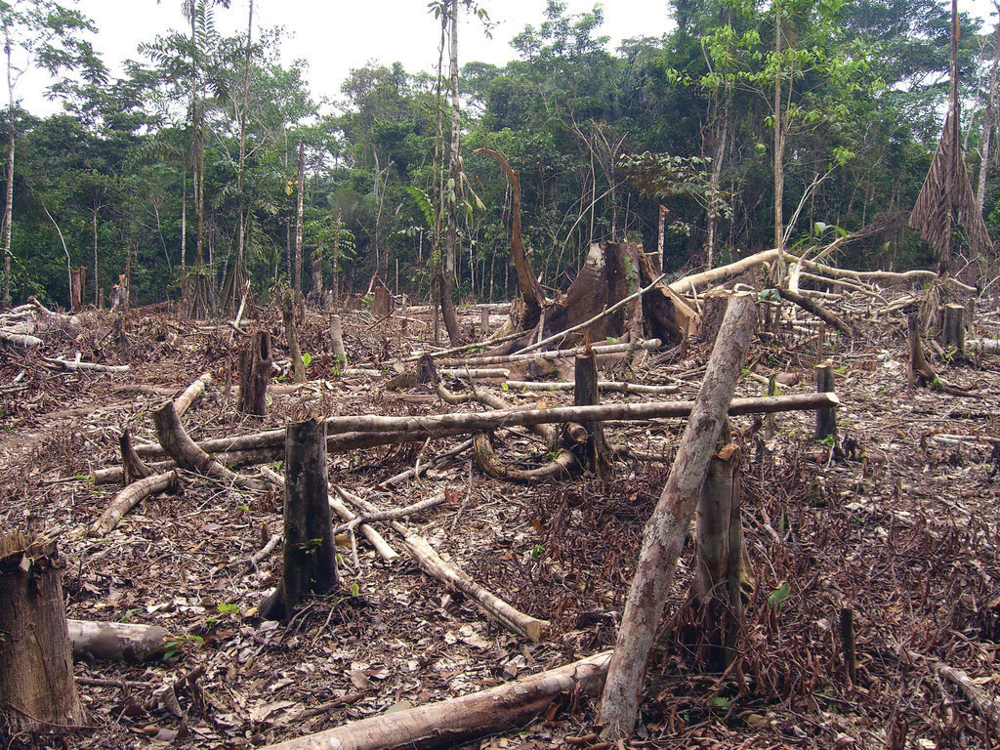Deforestation in the Amazon is caused mainly by logging, agriculture, and mining. Agricultural practices can include slash-and-burn farming and cattle ranching.
Source: Photo courtesy of Threat to Democracy, http://www.flickr.com/photos/16725630@N00/1524189000.
Deforestation has reduced the habitat critical to the survival of native species. An estimated 50 percent of the earth’s species live in tropical rain forests, which only cover about 5 percent of the earth’s surface. Tropical rain forests in the Amazon Basin are being cut down at an unsustainable rate, creating serious environmental problems. Loggers cut down the large trees, and the rest are usually burned to allow the ash to provide nutrients for other plants. The cleared areas are most often used by cattle ranchers until the soil is no longer viable. Then more forest is cut down and the process continues. Speculation that land prices will increase as the region becomes more developed encourages this process.
The forest has many layers of habitat. Soils in the tropics are extremely low in nutrients, which have been leached out by the abundant rainfall. The nutrients are on the surface layer of the ground built up from falling leaves, branches, and debris decomposing on the forest floor. The removal of the forests removes these nutrients and results in serious soil erosion. Tropical forests usually expand along the edges where falling debris from the trees collects and provides nutrients for young plants.
There is much discussion among environmentalists, scientists, and other concerned people about deforestation in the Amazon region, usually with a focus on the devastation that results from the loss of forested areas. Forest studies have indicated that tropical rain forests are actually quite resilient and can recover with proper forest management. However, clear-cutting large, wide areas for timber leaves an area devastated for an extended period. Clear-cutting could be replaced by strip cutting, which would harvest trees in narrower strips, leaving rows of trees standing. Strip cutting allows for more edges to be available for young plants to get their start to replenish the forest.
Figure 6.31 Dynamics of a Tropical Rain Forest
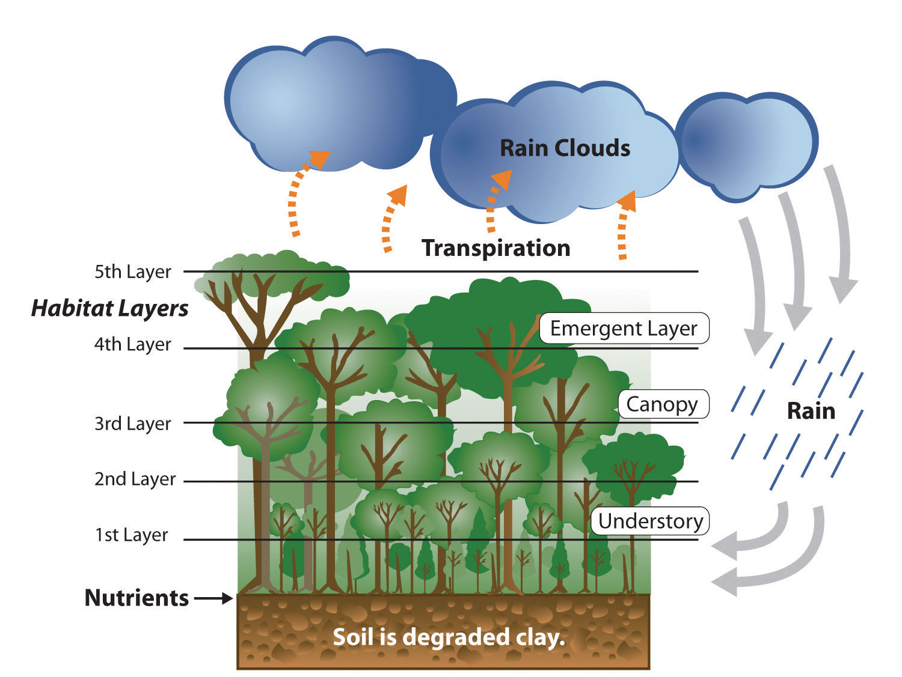This image illustrates that the nutrients of the tropical rain forest ecosystem rests on the forest floor because tropical soils are degraded. The forest canopy has many habitat layers providing homes to a diversity of organisms. Dense tropical rain forests also contribute to the process of transpiration, which cycles precipitation from the ground back into the atmospheres where it can collect and return in the form of rain.
Additional forest habitat is lost when rivers are dammed up for hydroelectric power and thousands of acres of tropical rain forests are flooded. Decomposing plant material in the reservoirs behind the dams increases the water’s acidity, causing erosion to the hydroelectric turbines. The turbines have a short life span, so the dams are a short-term energy solution that creates long-term problems. The immense flooded areas reduce the habitat for tropical organisms and restrict the use of the land for other purposes. Flooding can extend into traditional hunting grounds for indigenous groups, who have little political power to restrict this type of development.
The Amazon Basin is in the midst of a development pattern in which peripheral regions are exploited for natural resources or agricultural production. Much of the wealth generated ends up in the hands of investors who live in the core cities or in other countries rather than local people, a common and recurring pattern of economic exploitation of the periphery. The great frontier of the Amazon Basin continues to attract thousands of new immigrants seeking out opportunities or employment. As roads and highways are built to open up new paths through the region, even more of the forest gets cut down to accommodate the development pattern. This region will continue to be developed and altered, and the government of Brazil will have to continue to control its evolving dynamics in order to preserve the natural environment.
The core-peripheral spatial relationship can help us understand the power of Brazil’s southeast core and the natural resource base of the country’s peripheral north. This can explain the basic layout of Brazil’s economic geography, but the northeast, the west central, and the south are three additional regions to consider that contribute to the geographic understanding of the country. Each has specific qualities that make it unique in Brazil’s diversity of landscapes.
The northeast region is anchored along the coast, where plantation agriculture thrived during the colonial era. African slaves became the main labor base, and once freed, they made up most of the population. This agricultural region still grows sugarcane along the coast and other crops inland where the rainfall is reduced. The inland region includes parts of the Brazilian Highland, which runs parallel to the coast. Agriculture has traditionally required a large labor base, and family sizes in rural areas have been larger than their urban counterparts. This trend has given rise to a regional population of more than fifty million. However, the agriculture-based economy has not been able to supply the number of jobs and opportunities required for this large population. Poverty and unemployment in the northeast are high and have a devastating effect on the people. Some farms are not large enough for families to make a living on. Individuals in the northeast have developed a pattern of migration to the larger cities of the core area, looking for opportunities and employment—a pattern that fuels the self-constructed housing in the favelas of Rio de Janeiro and São Paulo.
The west central region has been opening up for development since the last part of the twentieth century and has experienced enormous advancements in industrial agriculture. In this region, vast cerradoTerm referring to the large savanna grasslands with occasional scrub forests. Most noted for the region in Brazil between the tropical rain forests of the Amazon Basin and the Brazilian Highlands. grasslands are being plowed and converted into colossal fields of soybeans, grains, and cotton. The northwest portion of the cerrado is the huge Motto Grosso Plateau, which almost covers the largest state of the region. The landscape of this plateau is mainly scrub forest and savanna. Traditionally, the savanna portions have been used for grazing livestock, but in recent years more of the land is being plowed for growing agricultural crops. The entire west central region of Brazil is a giant breadbasket for the country. Its full agricultural potential has not been reached. Industrial agriculture requires infrastructure and transportation networks to transport the harvests to market, but the government has not kept up with the development of infrastructure at the same rate as the private sector has been developing industrial agricultural production. This region has enormous potential for agricultural expansion in the future.
Figure 6.32 Metropolitan Cathedral of Brasilia
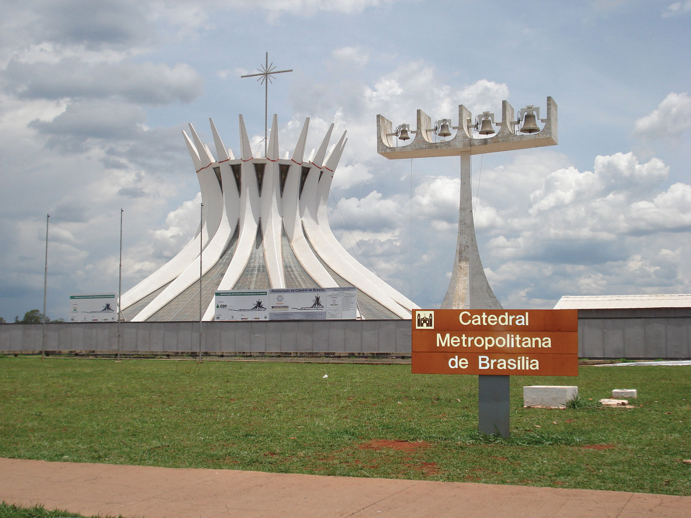The forward capital of Brasilia, built in 1960, showcases many architectural styles.
Source: Photo courtesy of Carla Salgueiro, http://www.flickr.com/photos/carlinha/4038849886.
Located on the eastern edge of the west central region is the forward capital of Brasilia. Its creation was prompted by the need to further develop the country’s interior. Built in 1960 and now a metropolitan center with more than 3.8 million people, the city was planned and designed to be a capital city. Because of its rapid growth and development, the city faces issues similar to those found in Rio de Janeiro or São Paulo. Rural-to-urban shift has brought many rural people to Brasilia in search of opportunities and employment. Just as Rio de Janeiro and São Paulo have favelas, Brasilia has slums and self-constructed districts, too. Moving the capital to Brasilia moved the focus from the coastal region of the south to the interior. However, a large percentage of the interior lies beyond the city of Brasilia. Highways that reach the Amazon can be accessed from the capital, but large areas of Brazil’s interior remain a frontier unexploited by development. Developing these areas may bring great opportunities and benefits to the country; however, recent development activities have also brought devastation to the tropical rain forests in many parts of the frontier.
The three states of the south region are located well south of the Tropic of Capricorn and extend south to the border with Uruguay. This extrusion is often called South Brazil. Brazil was colonized by the Portuguese, but many of the immigrants to the south were from other parts of Europe, including Germany and Italy. The Italian immigrants developed a growing wine industry, and the German immigrants raised cattle and grew other crops. The region’s good soils and moderate climate support many types of agriculture, which have dominated the early development of the region. Success in growing rice and tobacco and raising livestock has brought prosperity to the people who live here. Brazil has been one of the world’s main producers of tobacco for many years, and the tobacco from the south is highly regarded for its nicotine content.
Figure 6.33 Miolo Vineyard
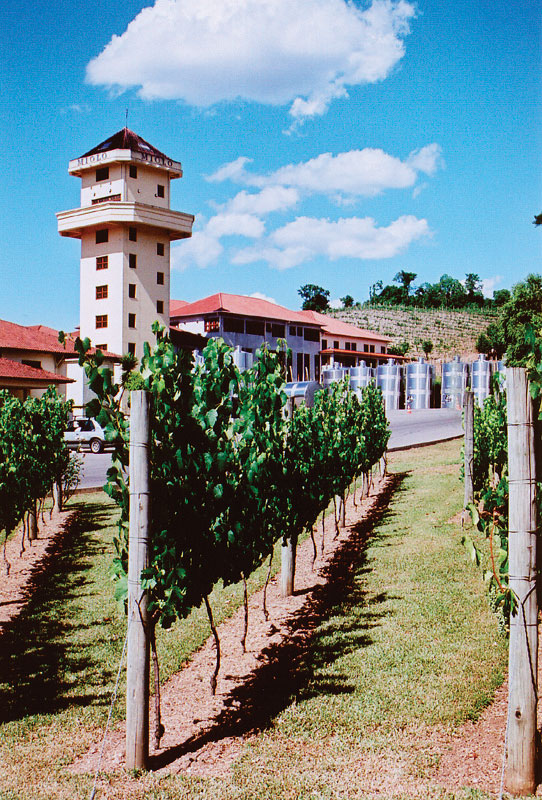The Miolo Vineyard is located in the interior of the Brazil’s affluent south region. Many Italian immigrants settled here and developed a wine industry that continues today.
Source: Photo courtesy of Jeff Belmonte, http://www.flickr.com/photos/jeffbelmonte/87127297.
The south is one of Brazil’s most affluent regions, and it has gained much wealth from agricultural activities. Farming is only one of the region’s highly developed economic activities. The area is also blessed with natural resources such as coal that is shipped north to the main cities where steel is produced. The wealth of the region has provided support for high-tech industries, which are attracted to the region because of the supply of skilled labor, access to quality transportation, and communication links. Computer companies have established software firms that have in turn attracted other new companies. A technology center similar to California’s Silicon Valley has combined with the manufacturing complex that has sprouted up along the coast of the south. The government and the business community have both provided economic incentives for these and other emerging enterprises.
The attractiveness of the region in terms of both physical geography and economic stability has prompted some who live there to suggest that the region should separate from Brazil and become an independent country. Along the same vein, residents of the region have discouraged immigrants from poorer regions of other Brazilian states from moving here. Poor migrants seeking opportunities or employment are often rejected and provided transportation back to where they came from just to keep them from becoming residents. Nevertheless, many people have migrated to the south. The region is host to immigrants from Japan and the Middle East. The progressive cities and striking environmental conditions will continue to attract people to live here.
Brazil’s “green city” of Curitiba in the south region has been a model of urban planning that has been used in the development of cities around the world. Curitiba is an attractive city in its urban design, environmental friendly attitudes and its green spaces. The city even served as Brazil’s capital for a few days in 1969 during a transition period before the forward capital of Brasilia was built.
The city is an industrial hub for southern Brazil and has diverse commercial activities—from manufacturing to financial services and tourism. Automobile manufacturing is a major part of the industrial sector and is the second largest car maker in the country. The modern airport, bus system, and planned green spaces create a favorable environment for commercial ventures, which are promoted via business incubators to attract new enterprises.
In 2010, Curitiba had an overall metropolitan population of about 2.3 million but has used mass transit and environmental planning with great efficiency. Urban planning has helped develop a combination of streets and districts that encourage walking, bicycling, and mass transit as the main means of access. Pedestrian malls with shopping, restaurants, and services are common. More than sixty miles of bike routes allow commuters to bicycle to work. The rapid transit system, regularly used by approximately 85 percent of the people in the city, is rated as one of the best in the world. As much as 70 percent of the city’s trash is recycled, providing additional employment opportunities. At the same time that the population doubled, the use of automobiles declined by 30 percent. However, the city still has the highest rate of automobile ownership per person in Brazil. The decline in automobile use has had a positive effect on air quality by reducing the amount of harmful exhaust emissions. Serious urban planning has gone into creating Curitiba as an efficient and yet progressive city. In 2010 Curitiba was awarded the Globe Sustainable City Award, which was set up to recognize cities and municipalities that excel in sustainable urban development around the world.“Globe Award 2010: The Brazilian city Curitiba awarded the Globe Sustainable City Award 2010,” EkonomiNyheter, http://www.ekonominyheter.se/pressmeddelanden/globe-award-2010-the-brazilian-city-curitiba-awarded-the-globe-sustainable-city -award-2010,16486.
Figure 6.34 Rua XV de Novembro
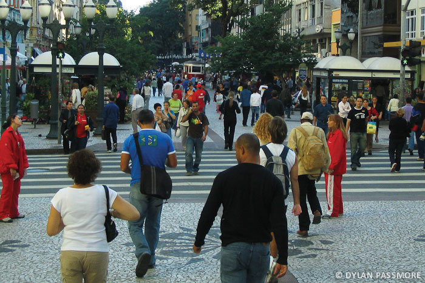The mayor of Curitiba developed a master plan for the city in 1972. One weekend, the mayor changed one of the main downtown avenues into a pedestrian-only street without announcing it to the public. At first the local businesses objected to it, but once the concept caught on, the street became one of the most actively visited parts of the downtown area.
Source: Photo courtesy of Dylan Passmore, http://www.flickr.com/photos/dylanpassmore/5583296600.
Identify the following key places on a map:
Cities of Brazil
Regions of Brazil
Physical Regions